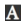

Features
New!
Creates new note with the same look as the old one.
Remove!
Removes current note from this computer! Also marks it in Google Chrom Storage, so it wont be updated on another PC.
Colors...
Opens colors' menu. Choose one that fits you the most.
Fonts...
Opens fonts' menu. Choose one that fits you the most.
Menu!

Opens Menu with general buttons. You can pin those buttons to toolbar by draggin them on it. Drop it anywhere alse, to pin to menu again.
Always on top.
Makes current note visible even if you focus another application.
Options.
Opens options.
Share/Update.
Share (or update) and get link/QRCode to shared note.
Hide!
Saves and closes current note. Click app icon to see it again.
Mouse over it displays Window actions menu (WAM).
Hide all notes!
Saves and closes all notes.
Hold Ctrl
Makes all links clickable. Link must be formatted like <http[s]:// or www>someweb.site.com e.g. http://google.com or www.google.pl. You can also use mouse wheel to change font size.
Text formatting
Use hotkeys to format text: Ctrl+B = BOLD, Ctrl+U = UNDERLINE, Ctrl+I = Italic, Ctrl+Shift+U = Strikethrough.
Use Ctrl + < mousewheel or </> > to resize font.
Task list
Creates tasklist. Doubleclick on element marks it as done or to be done.
Starts priter creator, so you can decide how to print a note.
Text background color
Choose and set background color for selected text.